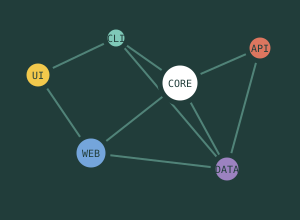

38
Когда GIN-индекс для JSONB начинает мешать больше, чем помогать?
После роста таблицы до 80 млн строк обновления стали заметно дороже. Хочу понять, пора ли разбивать индекс по частичным условиям или менять модель хранения.
Команда Cartograph рассказывает про кэш, граф зависимостей и три оптимизации, которые не сработали.
Читать разбор →
После роста таблицы до 80 млн строк обновления стали заметно дороже. Хочу понять, пора ли разбивать индекс по частичным условиям или менять модель хранения.
Автогенерация удобна, но протаскивает в интерфейс детали транспортного слоя. Как вы проводите границу в больших проектах?
Честный отчёт после шести месяцев на systemd, контейнерах и двух виртуальных машинах. С цифрами по времени поддержки и восстановлению.
Сравниваю модели на каталоге из 300 тысяч карточек. Особенно интересует поведение на опечатках и смешанном русском/английском.
Перехожу в роль руководителя внутри той же команды. Собираю список тем, чтобы не превратить первые встречи в формальную анкету.
Компонент знает свою ширину, но брейкпоинты начинают дублироваться. Есть ли рабочий паттерн для общей шкалы контейнеров?
Общий пакет цветов и отступов удобен, но несовместимое переименование блокирует сразу два релизных цикла. Ищу схему миграции без вечных алиасов.
Бэкап PostgreSQL и файлов уходит в разные хранилища. Нужна быстрая проверка согласованности, а полный тест восстановления занимает почти четыре часа.
В команде нет выделенных ревьюеров, и сложные изменения ждут свободного человека. Как ввести ожидаемое время ответа, не превратив его в формальную метрику?
В этой подборке пока нет публикаций.
Аккаунт нужен для публикаций, голосования, закладок и регистрации на события.
Учётные данные приняты. До окончания переноса войти могут участники, подтвердившие аккаунт до 1 августа.
Начните с измерения реальной нагрузки и стоимости изменения модели. Универсального решения здесь нет: важнее зафиксировать критерий, по которому вы будете сравнивать варианты.
В похожей задаче нам помог небольшой эксперимент на копии данных. Он показал узкое место раньше, чем мы начали менять рабочую архитектуру.